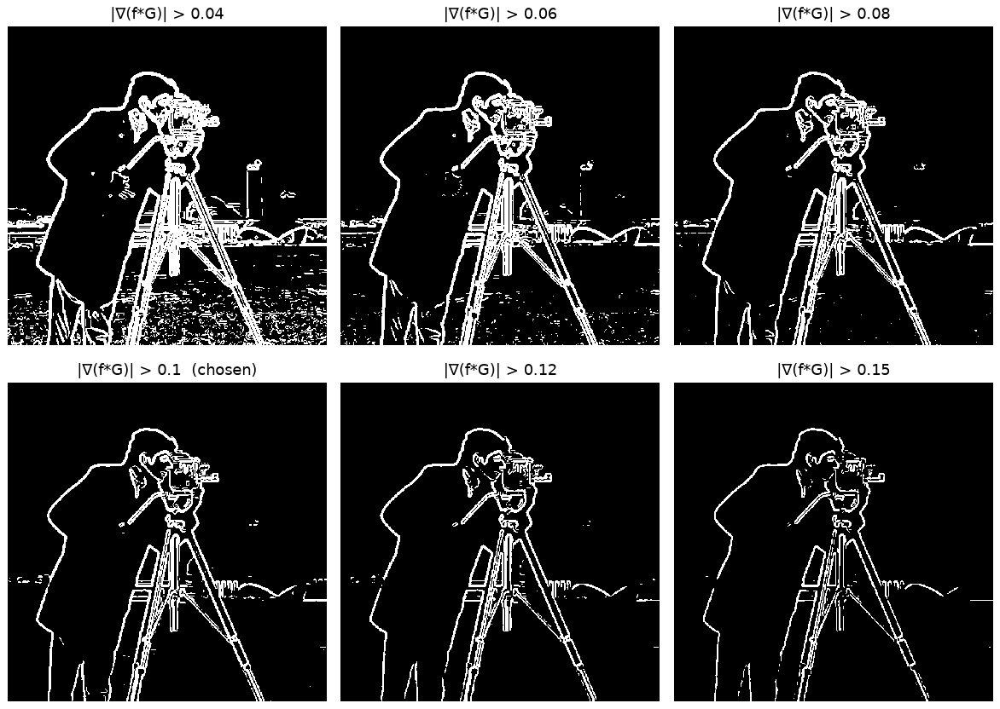
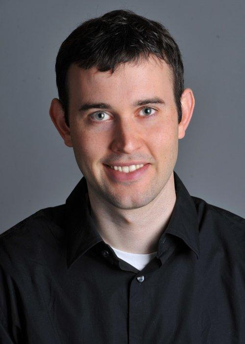
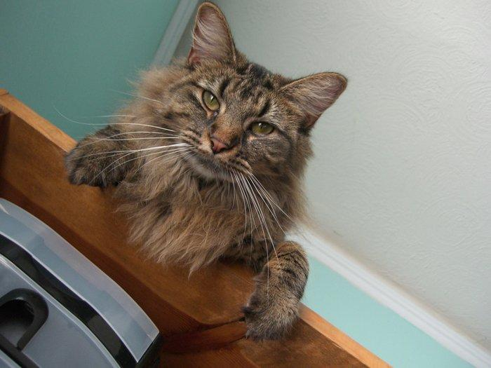
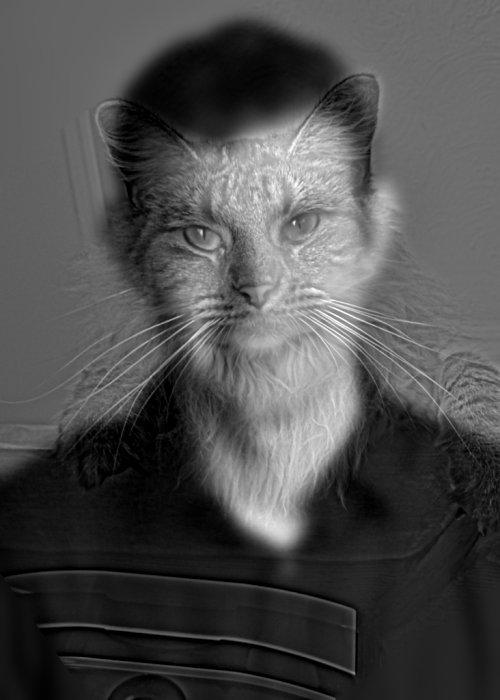

Part oneFun with filters
Everything in this part is built from one operation, 2-D convolution, and three tiny kernels: a box,
and the finite differences Dx = [1, 0, −1] and Dy = [1, 0, −1]ᵀ.
1.1 Convolution from scratch
Convolving an image f with a kernel h slides the flipped kernel over the image and takes a weighted sum at every position:
- Flip the kernel in both directions (
kernel[::-1, ::-1]). Without the flip it would be correlation; for the symmetric box filter the two are the same, but forDxandDythe sign flips. - Zero-pad the image by half the kernel size on each side, so the output has the same size as the input and pixels near the border still get a full window (the outside counts as 0).
- Four loops: two over output pixels
(i, j), two over kernel entries(m, n), one multiply-add at a time. - Two loops: keep the loops over pixels, and replace the two kernel loops with one array operation:
np.sum(flipped * window).
Code (numpy only)
DX = np.array([[1, 0, -1]], dtype=np.float32)
DY = np.array([[1], [0], [-1]], dtype=np.float32)
def box_filter(size: int = 9) -> np.ndarray:
"""size x size averaging kernel (sums to 1)."""
return np.full((size, size), 1.0 / size ** 2, dtype=np.float32)
def zero_pad(image: np.ndarray, top: int, bottom: int, left: int, right: int) -> np.ndarray:
"""Surround the image with zeros: a new array with the image copied into its middle."""
h, w = image.shape
out = np.zeros((h + top + bottom, w + left + right), dtype=image.dtype)
out[top:top + h, left:left + w] = image
return out
def _prepare(image: np.ndarray, kernel: np.ndarray) -> tuple[np.ndarray, np.ndarray]:
"""Flip the kernel (convolution, not correlation) and zero-pad the image for a "same"-size output.
Same centring as convolve2d(mode="same"): kh // 2 rows on top, (kh - 1) // 2 below
(equal for odd kernels), and likewise for the columns.
"""
kh, kw = kernel.shape
flipped = kernel[::-1, ::-1]
padded = zero_pad(image, kh // 2, (kh - 1) // 2, kw // 2, (kw - 1) // 2)
return padded, flipped
def convolve_4loops(image: np.ndarray, kernel: np.ndarray) -> np.ndarray:
"""out[i, j] = sum over (m, n) of flipped[m, n] * padded[i + m, j + n], one multiply at a time."""
padded, flipped = _prepare(image, kernel)
h, w = image.shape
kh, kw = kernel.shape
out = np.zeros((h, w), dtype=np.float64)
for i in range(h):
for j in range(w):
total = 0.0
for m in range(kh):
for n in range(kw):
total += flipped[m, n] * padded[i + m, j + n]
out[i, j] = total
return out
def convolve_2loops(image: np.ndarray, kernel: np.ndarray) -> np.ndarray:
"""Same as convolve_4loops, but the two kernel loops become one array multiply-and-sum per pixel."""
padded, flipped = _prepare(image, kernel)
h, w = image.shape
kh, kw = kernel.shape
out = np.zeros((h, w), dtype=np.float64)
for i in range(h):
for j in range(w):
out[i, j] = np.sum(flipped * padded[i:i + kh, j:j + kw])
return outComparison with scipy.signal.convolve2d
The reference is convolve2d(image, kernel, mode="same", boundary="fill", fillvalue=0), which
handles the boundary the same way as my padding. The four-loop version is too slow for the full selfie, so all three
are timed on a centre crop; the two-loop version and scipy also run on the whole image.
| Kernel | 4 loops (256×256) | 2 loops (256×256) | convolve2d (256×256) | 2 loops (600×450) | convolve2d (600×450) | max |mine − scipy| |
|---|---|---|---|---|---|---|
| 9x9 box | 535.7 ms | 65.6 ms | 3.6 ms | 267.5 ms | 14.8 ms | 1.1e-06 |
| Dx | 26.8 ms | 57.4 ms | 0.4 ms | 241.7 ms | 1.6 ms | 0.0e+00 |
| Dy | 30.2 ms | 58.5 ms | 0.6 ms | 243.9 ms | 2.4 ms | 0.0e+00 |
Runtime. The four-loop version runs H·W·k² interpreted multiply-adds. For the 9×9 box
(81 taps per pixel) the two-loop version is about 9× faster, because the 81 multiply-adds per pixel happen inside numpy.
For the 3-tap Dx / Dy, the four-loop version is actually faster: three Python
multiply-adds cost less than the fixed overhead of one np.sum call on a tiny array. Either way, every
pixel still costs one trip through the Python loop. convolve2d does everything in compiled code and is
roughly 20× (box) to 150× (Dx / Dy) faster than my two-loop version.
Boundaries. All three treat pixels outside the image as 0, so the results are identical up to floating-point
rounding. Zero fill has visible side effects: the box-blurred selfie darkens towards the frame (the window averages in
black), and Dx / Dy fire along the image border, where the image "drops" to 0.
convolve2d can also use boundary="symm" (mirror) or "wrap" (periodic), which
avoid the dark frame; and its default mode="full" returns an image larger by k − 1.

1.2 Finite difference operator
From here on I use scipy.signal.convolve2d with mode="same" and
boundary="symm": the image is mirrored at its border, so, unlike zero fill, the frame of the image
doesn't show up as an edge.
- Partial derivatives.
∂f/∂x = f * Dxand∂f/∂y = f * Dy. With the flip,∂f/∂x[i, j] = f[i, j+1] − f[i, j−1]: positive (white) where the image gets brighter to the right, negative (black) where it gets darker.∂f/∂xpicks out vertical edges (the tripod legs), and∂f/∂yhorizontal ones (the horizon, the shoulders). - Gradient magnitude.
|∇f| = √((∂f/∂x)² + (∂f/∂y)²): how strong the edge is, whatever its direction. - Binarize.
edges = |∇f| > threshold.

Choosing the threshold
The image is in [0, 1], so |∇f| ranges from 0 to about 0.86; half the pixels are below 0.016 (flat sky and
coat) and only 1% are above 0.41. I tried a range of thresholds:

Threshold = 0.25. Below 0.2, the grass in the lower third turns into a field of speckles. Each blade of grass is a real intensity change, but not an edge we want. At 0.25 the grass is almost gone, and the outline of the man, the camera and the tripod legs and most of the building outlines on the horizon remain. At 0.3 the buildings start to disappear, and at 0.4 even the tripod legs break apart. The trade-off I chose: accept a few gaps in the thin tripod legs and a few isolated dots, rather than lose the background buildings.
1.3 Derivative of Gaussian (DoG) filter
Finite differences respond to every pixel-to-pixel change, including noise and fine texture. Blurring first with a Gaussian G removes those high frequencies before differentiating.
- Gaussian.
g = cv2.getGaussianKernel(11, 1.5)is a 1-D 11×1 Gaussian with σ = 1.5. The size covers ±3σ, where the Gaussian has fallen to about 1% of its peak.G = g gᵀis the 2-D 11×11 kernel. - Two convolutions. Blur, then repeat Part 1.2 on the blurred image:
(f * G) * Dx,(f * G) * Dy. - One convolution. Precompute the DoG filters
G * DxandG * Dy(full convolution, so 11×13 and 13×11), then convolve the image with them once.


Each DoG filter is a Gaussian-smoothed version of the finite difference: it compares the average brightness on one side of a pixel with the average on the other side, instead of two single pixels. That is why it is much less sensitive to noise.

Same result. The largest difference between the two-step and the one-step gradients is 1.2e-15, which is floating-point rounding. Convolution is associative, so (f * G) * D = f * (G * D). This holds even at the border here: mirroring the image and then blurring with the symmetric G gives an image that is itself mirror-symmetric, so mirroring before or after the blur makes no difference.
Code: Gaussian and DoG filters
def gaussian_2d(sigma: float, ksize: int | None = None) -> np.ndarray:
"""PDF: "use cv2.getGaussianKernel() to create a 1D gaussian and then take an outer product with its transpose"."""
g = cv2.getGaussianKernel(ksize or ksize_for(sigma), sigma) # (k, 1), sums to 1
return g @ g.T
def dog_filters(g: np.ndarray) -> tuple[np.ndarray, np.ndarray]:
"""Derivative of Gaussian filters G * Dx and G * Dy, as one kernel each.
mode="full" keeps the whole result (one column / row larger than G), so by associativity
(f * G) * Dx = f * (G * Dx) holds exactly away from the border.
"""
return convolve2d(g, DX, mode="full"), convolve2d(g, DY, mode="full")What is different from the finite differences?

- Less noise. The derivative images of the blurred image are clean in the grass and sky, and the gradient magnitude has no speckle background.
- Continuous edges. The outlines of the coat and the tripod legs are unbroken lines, where the finite difference edge map breaks them into dashed fragments. Blurring spreads each edge's response over a few pixels, so a thin or slightly noisy edge no longer dips below the threshold.
- Thicker edges. The same spreading makes edges about 2σ wide instead of 1–2 pixels. A thinning step (non-maximum suppression, as in Canny) would be needed to get one-pixel lines.
- Lower threshold. Blurring averages the intensity step over several pixels, so the gradient values are smaller: the DoG threshold is 0.10 instead of 0.25 (chosen with the same sweep, below). Because the noise drops even more than the edges do, a lower threshold keeps more real edges (the building outlines) without letting the grass back in.
DoG threshold sweep

Bells & whistles: gradient orientation
The gradient (∂f/∂x, ∂f/∂y) points towards the brighter side of an edge. Its direction is an angle, and
an angle wraps around (0° = 360°), so it fits the hue channel of HSV, which also wraps around.
- Gradients from the DoG filters of Part 1.3 (σ = 1.5), so the angles aren't dominated by noise.
- Angle without built-in angle functions.
arctan2_ownfolds each vector into the first octant (a = min(|x|, |y|) / max(|x|, |y|), between 0 and 1), evaluates arctan(a) with a 5-term polynomial (Abramowitz & Stegun 4.4.49, error ≤ 1e-5 rad), then unfolds it with the signs of x and y. Rows grow downwards in an image, so I useθ = atan2(−∂f/∂y, ∂f/∂x): counter-clockwise from "brighter to the right", like a normal plot. - HSV. Hue = θ / 2π, saturation = 1, and value = gradient magnitude (scaled so the 99th percentile is full
brightness). Flat areas have no meaningful direction, so they stay dark.
matplotlib.colors.hsv_to_rgbconverts to RGB.


Check: on this image my arctan2_own is within 1.1e-05 rad of np.arctan2 (used only for this check, never for the result).
Reading the result. The two sides of each tripod leg have opposite colors (e.g. red / cyan), because one side gets brighter to the right and the other to the left. The top of the man's head and shoulders is green-yellow (brighter upwards, into the sky), and the left edge of the coat is blue-cyan (brighter to the left, towards the sky).
Code: angle and HSV
def arctan2_own(y: np.ndarray, x: np.ndarray) -> np.ndarray:
"""Angle of the vector (x, y) in (-pi, pi], with no built-in angle function.
1. Fold every vector into the first octant: a = min(|x|, |y|) / max(|x|, |y|) is in [0, 1].
2. atan(a) on [0, 1] from the polynomial of Abramowitz & Stegun 4.4.49 (error <= 1e-5 rad).
3. Unfold: swap to pi/2 - angle if |y| > |x|, mirror to pi - angle if x < 0, negate if y < 0.
"""
ax, ay = np.abs(x), np.abs(y)
big, small = np.maximum(ax, ay), np.minimum(ax, ay)
a = np.divide(small, big, out=np.zeros_like(big, dtype=np.float64), where=big > 0)
s = a * a
r = a * (0.9998660 + s * (-0.3302995 + s * (0.1801410 + s * (-0.0851330 + s * 0.0208351))))
r = np.where(ay > ax, np.pi / 2 - r, r)
r = np.where(x < 0, np.pi - r, r)
return np.where(y < 0, -r, r)
def orientation_rgb(gx: np.ndarray, gy: np.ndarray, value: np.ndarray) -> np.ndarray:
"""Gradient direction as HSV hue, saturation 1, brightness = `value` (in [0, 1]).
Image rows grow downwards, so the angle is measured counter-clockwise from +x with y pointing up:
theta = atan2(-gy, gx). Hue = theta / 2pi wraps around, so 0 and 2pi get the same color.
"""
theta = arctan2_own(-gy, gx)
hue = (theta / (2 * np.pi)) % 1.0
return hsv_to_rgb(np.stack([hue, np.ones_like(hue), np.clip(value, 0, 1)], axis=-1))Part twoFun with frequencies
2.1 Image "sharpening"
A Gaussian is a low-pass filter: f * G keeps the low frequencies of an image.
What it removes, f − f * G, is the high frequencies: edges, fine texture, detail. An image looks sharper when
those are stronger, so unsharp masking adds a multiple α of them back:
The last line is a single convolution with the unsharp mask filter (1 + α) e − α G: a
positive spike in the middle surrounded by a negative Gaussian "moat". I use σ = 2 (13×13) and α = 1.5, the same for
every image, and convolve each color channel separately. The result matches the two-step f + α(f − f * G)
to floating-point rounding.
Code: the unsharp mask filter
def unsharp_kernel(g: np.ndarray, alpha: float) -> np.ndarray:
"""Unsharp mask as one filter: f + alpha (f - f * G) = f * ((1 + alpha) e - alpha G), e = unit impulse."""
impulse = np.zeros_like(g)
impulse[g.shape[0] // 2, g.shape[1] // 2] = 1.0
return (1 + alpha) * impulse - alpha * g
1.8e-15.
2.0e-15.Drag the sliders to compare the original with the sharpened result:

 originalsharpened
originalsharpened

 originalsharpened
originalsharpened
Varying the amount α


α = 0 is the original. Up to about α = 1, edges and fur get crisper and the image looks more in focus. At α = 2 it starts to look over-processed, and at α = 4 the fur turns into harsh, noisy texture, the white whiskers and eye highlights clip, and bright and dark halos appear along the edges (the negative "moat" of the filter overshoots on each side of an edge). Sharpening amplifies all high frequencies equally, including noise and JPEG artifacts.
Evaluation: blur a sharp image, then sharpen it again
I blurred a sharp photo of the Toronto skyline with the same Gaussian, sharpened the blurred image with increasing α, and compared each result with the original using PSNR (higher = closer to the original).


Observations. Sharpening makes the blurred image look sharper and moves it closer to the original, but only up to a point: PSNR rises from 25.7 dB (blurred) to 26.8 dB at α = 2, then falls again to 26.2 dB at α = 4, where bright halos appear around the CN Tower and the buildings. Even the best result never gets back the detail of the original: the rows of windows and the thin antenna that the blur removed stay gone.
The reason: blurring multiplies each frequency by the Gaussian's spectrum, which is close to 0 at high frequencies. Unsharp masking boosts the high frequencies that are left, but it can't create frequencies that were removed. So it increases contrast at edges that still exist (which our eyes read as "sharp"), but it doesn't truly undo the blur.
2.2 Hybrid images
A hybrid image (Oliva, Torralba & Schyns, 2006) changes meaning with viewing distance. Up close, high frequencies dominate what we see. From far away (or when the image is small) the eye can no longer resolve them, and only the low frequencies are left. So a hybrid is the low frequencies of one image plus the high frequencies of another:
- Align. For Derek and Nutmeg I ported the course's
align_images.m. I click two points per image (the centres of the two eyes); the code pads each image so the midpoint of its points is the image centre, shrinks the image whose points are farther apart so both distances match, rotates the cat by the difference in angle, and crops both to the same size. Alignment matters because the two interpretations only fuse into one percept when their parts line up (Oliva et al.). The clicked points are saved, so the result is reproducible. The result keeps the whole frame of Derek's photo, so both heads stay complete (the starter crops by hand instead). Where the rotated cat doesn't reach (two corners), the gap is filled with the nearest cat pixels and the cat's high-pass part fades smoothly to zero, so those corners just show Derek. My own two pairs were aligned when I prepared them. - Low-pass the far image with a 2-D Gaussian (σ_low), as the paper suggests.
- High-pass the close image with the impulse minus a Gaussian (σ_high): the image minus its blurred version.
- Add the two. The high-pass part averages to zero, so adding keeps the brightness of the far image. Like the starter, the main results are in grayscale; color is explored in the bells & whistles below.
Code: alignment and hybrid
def align_images(im1: np.ndarray, im2: np.ndarray, p1: Points, p2: Points) -> tuple[np.ndarray, np.ndarray]:
"""Translate, scale and rotate so that p1 in im1 lands on p2 in im2; both are returned at the same size.
1. Translate: pad each image so the midpoint of its two points is the image centre.
2. Scale: shrink the image whose two points are farther apart, so both distances are equal.
3. Rotate im1 about its centre by the difference of the two angles (scipy's positive angle
is counter-clockwise on screen, like imrotate). reshape=True keeps the whole rotated image.
4. Crop both, on both sides, to the smaller height and width.
"""
im1 = _pad_to_centre(im1, *np.mean(p1, axis=0))
im2 = _pad_to_centre(im2, *np.mean(p2, axis=0))
len1, len2 = math.dist(*p1), math.dist(*p2)
if len2 / len1 < 1:
im1 = _resize(im1, len2 / len1)
else:
im2 = _resize(im2, len1 / len2)
dtheta = _angle(p2) - _angle(p1)
im1 = ndi.rotate(im1, math.degrees(dtheta), axes=(1, 0), reshape=True, order=1)
h, w = min(im1.shape[0], im2.shape[0]), min(im1.shape[1], im2.shape[1])
return _crop_to(im1, h, w), _crop_to(im2, h, w)
def low_pass(im: np.ndarray, sigma: float) -> np.ndarray:
"""PDF: "For a low-pass filter, Oliva et al. suggest using a standard 2D Gaussian filter"."""
return gaussian_blur(im, sigma)
def high_pass(im: np.ndarray, sigma: float) -> np.ndarray:
"""PDF: "the impulse filter minus the Gaussian filter (... subtracting the Gaussian-filtered image from the original)"."""
return im - gaussian_blur(im, sigma)
def hybrid_image(im_low: np.ndarray, im_high: np.ndarray, sigma_low: float, sigma_high: float) -> np.ndarray:
"""Low frequencies of im_low + high frequencies of im_high (added; the high-pass part is zero-mean)."""
return np.clip(low_pass(im_low, sigma_low) + high_pass(im_high, sigma_high), 0, 1)
def cutoff_frequency(sigma: float) -> float:
"""Frequency (cycles / pixel) where a Gaussian of std sigma passes half the amplitude.
The Gaussian's Fourier transform is exp(-2 pi^2 sigma^2 f^2); it equals 1/2 at
f = sqrt(ln 2 / 2) / (pi sigma) ~= 0.187 / sigma. The high-pass filter (impulse - Gaussian) passes
1/2 at the same frequency.
"""
return math.sqrt(math.log(2) / 2) / (math.pi * sigma)My favourite: Derek + Nutmeg, step by step
1. Original images and alignment


2. Filtered images


3. Frequency analysis

4. Choosing the cutoff frequencies


5. Hybrid image

Reading the spectra. In each panel, the centre is frequency 0 and the distance from the centre is the frequency. The low-passed spectrum keeps only a small bright blob in the centre. The high-passed one is the opposite: its centre is dark, and everything farther out is kept. The hybrid's spectrum is the union of the two: Derek in the middle, Nutmeg around it. The bright horizontal and vertical lines through the centre come from the image borders: the FFT treats the image as periodic, so the jump from the left edge to the right edge (and top to bottom) acts like a sharp edge in the image.
Why σ_low = 7 and σ_high = 4. In the sweep, a small σ_low (4) leaves Derek's eyes and mouth sharp enough to compete with the cat up close, and the two faces look superimposed rather than one or the other; σ_low = 10 blurs Derek so much that he is hard to recognise even when small. With σ_high = 2 only the finest whiskers survive and the cat is faint up close; with σ_high = 7 the cat's coarser fur pattern shows through even from far away. σ = 7 / 4 puts the half-gain cutoffs at 0.027 and 0.047 cycles/pixel. The gap between them is deliberate: no band of frequencies is passed strongly by both filters, so neither image interferes with the other at the scale where it should win.
All three hybrids
Each one is shown with its two inputs, and at shrinking sizes. Shrinking an image removes its high frequencies, so the strip simulates stepping back. Up close you should see the right-hand input; in the smallest copy, the left-hand one.
Derek + Nutmeg



Cat + jaguar


Maine coon + owl


Which image goes where. The close image needs strong, fine texture; the far image needs a clear overall shape and shading. For the cat and the jaguar, the jaguar's spots are perfect high frequencies and the smooth orange cat is a clean low-frequency face. The other way round, the cat has almost no texture to show up close. For the Maine coon and the owl, the owl's crisp feather pattern goes on top. With the cat's long fur as the high-pass image, the fur was visible from every distance. One weakness of the cat + jaguar hybrid: the jaguar's textured background leaks onto the cat's plain white background, where it shows as faint spots.
Bells & whistles: color hybrids
For every pair I built four versions: each of the two components in grayscale or in color. In color, each RGB channel is filtered separately. In grayscale, the gray component is added to all three channels.


Color works best in the low-frequency component. "Color low + gray high" is clearly different from the grayscale hybrid: the orange cat, Derek's skin tone and the background colors come back, and from far away the hybrid looks like a normal color photo of the far subject, which makes that interpretation stronger. "Gray low + color high" looks almost identical to the grayscale version. "Color both" looks almost the same as "color low".
The reason is where color lives in the spectrum. Color comes in large, smooth regions (fur, skin, background); edges and texture are mostly changes in brightness, not in hue. So the high-pass part of a color image is almost gray, and its color barely shows. Our eyes also resolve fine detail in color much worse than in brightness, which is why JPEG stores color at lower resolution. The one place high-frequency color is visible is a small, saturated detail: the owl's amber eyes in "gray low + color high".
The trade-off: color in the low frequencies strengthens the far image, so it can also slightly weaken the close one. In the cat + jaguar hybrid, the jaguar looks orange up close. I prefer color low + gray high: it gets almost all the benefit, and it keeps the close-up texture clean.
2.3 Gaussian and Laplacian stacks
A stack is a pyramid without the downsampling: every level keeps the full image size, so a grayscale stack fits in
one 3-D array. Everything is built from scratch from my gaussian_blur
(cv2.getGaussianKernel + convolve2d); no built-in pyramid functions.
- Gaussian stack.
G₀is the image, and each level blurs the previous one:Gi = Gi−1 * Gaussian(σ·2i−1), with σ = 2 and 6 levels. The sigma doubles at each level because that is what a pyramid does: it applies the same small filter to an image half the size, which, measured in pixels of the original, is a filter twice as wide. So the stack covers the same frequency bands as a pyramid that halves at each level. The total blur at each level (σ of the levels added in quadrature) is ≈ 2, 4, 9, 18 and 37 px. - Laplacian stack.
Li = Gi − Gi+1: what the next blur removes, one band of frequencies per level. The last level keeps the rest,L₅ = G₅. The levels telescope, soΣLi = G₀: the image is rebuilt exactly, with no upsampling (every level is full size).
Check: summing each Laplacian stack gives back the original image to within 1.1e-16.
Code: stacks and blending
def gaussian_stack(im: np.ndarray, levels: int, sigma: float) -> list[np.ndarray]:
"""[G_0, ..., G_{levels-1}], all the size of the input. G_0 = im, G_i = G_{i-1} * Gaussian(sigma * 2^(i-1)).
PDF: "apply the Gaussian filter at each level, but do not subsample", so that the stack "behaves
similarly to a pyramid that was down sampled to half its size at each level". A pyramid applies the
same small filter to an image half the size each time, which, measured in pixels of the original, is a
filter twice as wide each level. So the sigma doubles from one level to the next here.
"""
stack = [im]
for i in range(1, levels):
stack.append(gaussian_blur(stack[-1], sigma * 2 ** (i - 1)))
return stack
def laplacian_stack(gaussian: list[np.ndarray]) -> list[np.ndarray]:
"""L_i = G_i - G_{i+1} (one frequency band each), and the last level keeps the rest: L_{n-1} = G_{n-1}.
The levels telescope, so sum(L) = G_0: the stack reconstructs the image exactly.
"""
return [g - g_next for g, g_next in zip(gaussian, gaussian[1:])] + [gaussian[-1]]
def blend_stacks(im_a: np.ndarray, im_b: np.ndarray, mask: np.ndarray, levels: int, sigma: float,
blur_mask: bool = True) -> dict:
"""Multiresolution blending with a mask (Burt & Adelson, the algorithm on p. 230).
LS_i = GR_i * LA_i + (1 - GR_i) * LB_i, blended = sum_i LS_i, where LA / LB are the Laplacian stacks of
the two images and GR is the Gaussian stack of the mask (1 = take im_a). The mask is blurred more at
each level, so low frequencies are mixed over a wide band around the seam and fine details over a
narrow one. Returns every stack, so the process can be shown.
blur_mask=False uses the same sharp mask at every level: the algorithm on p. 226 as-is, which the PDF
warns leaves a clear seam with stacks (with a pyramid, downsampling and upsampling blur the seam instead).
"""
la = laplacian_stack(gaussian_stack(im_a, levels, sigma))
lb = laplacian_stack(gaussian_stack(im_b, levels, sigma))
mask = mask.astype(np.float64)
gr = [_match(m, im_a) for m in (gaussian_stack(mask, levels, sigma) if blur_mask else [mask] * levels)]
part_a = [m * l for m, l in zip(gr, la)] # im_a weighted by the mask, per level
part_b = [(1 - m) * l for m, l in zip(gr, lb)]
blended = [pa + pb for pa, pb in zip(part_a, part_b)]
return {"la": la, "lb": lb, "mask": gr, "part_a": part_a, "part_b": part_b, "levels": blended,
"result": np.clip(collapse(blended), 0, 1)}

Recreating Figure 3.42 (Szeliski, 2nd ed., p. 167)
Figure 3.42 shows the oraple being built level by level. In each row, the left column is the apple's Laplacian level weighted by the mask's Gaussian stack at the same level, the middle is the orange's level weighted by one minus the mask, and the right is their sum. Rows (a)–(c), (d)–(f) and (g)–(i) are levels 0, 2 and 4 (high, medium and low frequencies). The last row sums all levels. The blending itself is Part 2.4 below.

What the figure shows. At level 0 the mask is still almost a step, so fine detail switches from apple to orange within a few pixels: the apple's grain stops and the orange's peel starts right at the seam, but these details are so small that the switch is invisible. At level 4 the mask has been blurred by σ ≈ 18, so the broad shading and the red-to-yellow color change are mixed over a wide band. Each band is joined over a transition about as wide as the features it contains, which is the idea of Burt & Adelson's multiresolution spline: a wide transition hides the low-frequency step (no visible line in color or brightness), and a narrow one keeps the details from overlapping as ghosts.
2.4 Multiresolution blending
With the stacks from 2.3, blending two images A and B under a mask M (1 = take A) is the algorithm on p. 230 of Burt & Adelson:
where LA and LB are the Laplacian stacks of the two images and GM is the Gaussian stack of the mask. Each frequency band is joined with a version of the mask that is blurred about as much as that band: fine details switch over a few pixels, broad shading and color over tens of pixels. Color images are blended one channel at a time.
Why the mask needs its own Gaussian stack
The PDF warns that the simpler algorithm on p. 226 (take the left half of each level of A and the right half of B, with a sharp seam at every level) doesn't work with stacks. With a pyramid, the downsampling and upsampling blur that seam for free; with a stack, nothing does. I compared it with other simple methods on the oraple:


- Direct paste and stacks with a sharp mask both leave a hard vertical line. The stacks change nothing here, because every band is cut at the same place, so the bands still add up to a pasted image.
- One blurred mask, σ = 4: the line softens, but the jump from red to yellow over a few pixels is still clearly a seam.
- One blurred mask, σ = 30: the color now changes smoothly, but over that wide band both textures are visible at half strength: the apple's grain and the orange's dimples overlap like a double exposure.
- Stacks with a blurred mask (p. 230): the color changes over a wide band like σ = 30, while the fine texture switches over a few pixels like the direct paste. You get both at once, which a single mask can't do.
Results
Three blends: the oraple, a straight seam on my own images (half Earth, half Mars), and an irregular mask on my own images. For the irregular one I gave Doctor Strange his third eye (from Multiverse of Madness): I scaled a copy of the frame so its eye sits on his forehead, and drew an eye-shaped mask around it, in the spirit of the paper's eye-in-hand example (Figure 8).
Oraple


Earth + Mars


Doctor Strange's third eye


Choosing the number of levels
The deepest level's mask is blurred by about 37 px with 6 levels (σ = 2, doubling). That suits the oraple and the planets, where the seam runs through the whole image. The eye mask is only 108 × 44 px, so I compared 2, 4 and 6 levels:

With 2 levels the coarse shading of the eye is pasted in almost unchanged, and its outline is visible as a darker patch. With 6 levels the low-frequency levels of the tiny mask are blurred into a faint, wide blob, so the eye loses its own shading and looks pale and washed out. With 4 levels (total blur ≈ 9 px, about the size of the skin around the eye) the eye keeps its shadows and blends into the forehead. Rule of thumb: the deepest level's blur should match the size of the region being blended.
The process for my favourite: the Laplacian stack of the third eye
Like Figure 10 in the paper: for each level, the masked contribution of each image and their sum, zoomed on the forehead. Levels 0–2 are frequency bands (0 = mid-gray); level 3 is the low-pass rest. The last row sums all levels.

In the fine bands (L0, L1) the eye's lashes and iris are inserted within the sharp outline of the mask, and the forehead's own texture is removed there. In the low-pass rest (L3), the mask has spread into a soft oval: the eye's surroundings are mixed with the forehead's skin tone, so there is no visible edge in brightness or color around the new eye.
Bells & whistles: color blending
Every blend above is in color. Here each one is also done in grayscale, with the same mask and levels:


Color makes the blend both more convincing and more striking. In grayscale, the oraple is only a darker half and a lighter half with different textures: it could be one unevenly lit fruit, so the "two fruits in one" idea is weak. Earth and Mars become two gray textures. In color, the red-to-yellow and blue-to-orange changes are what make the result read as one object with two natures.
Color is also where a seam would be most visible, and the multiresolution blend handles it. Color lives mostly in the low frequencies (Part 2.2), so it is mixed in the coarsest levels, over the widest band. In the third eye this is what matches the inserted eye's slightly different skin tone to the forehead: in grayscale you can't tell whether that worked, in color you can see that it did. I blend the three RGB channels separately with the same mask stack. Since every channel uses the same weights, the colors along the seam are always a mix of the two images' colors, so no new hue appears.
What I learned
The most important thing I learned: almost everything in this assignment is the same operation, a Gaussian blur, and the real decision every time is which frequencies to keep, remove or mix.
- One filter, many tools. The Gaussian removes noise before differentiating (DoG), its complement adds detail back (unsharp masking), splitting an image at one cutoff makes a hybrid, and splitting it into many bands makes blending seamless. Once I saw them all as "pick a band", choosing a parameter became a question about the picture, not trial and error.
- σ is a scale, and it has to match the content. The edge threshold depended on the blur; the hybrid cutoffs had to separate Derek's face from the cat's fur; and the blend only looked right when the deepest level's blur matched the size of the region (6 levels for the planets, 4 for the small eye). The same σ that works for one image can fail on another.
- Perception follows frequency. A hybrid works because we can't resolve fine detail from far away. Sharpening "works" because we read edge contrast as focus, even though the PSNR test showed that it can't restore detail the blur removed. And the color experiments in both 2.2 and 2.4 pointed the same way: color lives in the low frequencies, so that is where it helps.
- Math identities are practical. Associativity let me replace two convolutions with one DoG filter; separability made the large Gaussians of Part 2 ~25× cheaper; and the telescoping Laplacian stack rebuilds the image exactly, which gave me a built-in correctness check.
- Details at the borders matter. Zero padding made the image frame look like an edge, the FFT showed a bright cross from the image borders, and alignment padding needed care so that the heads weren't cropped off. Implementing the convolution from scratch is what made me look at these.
Summary
- Convolution: zero-padded 4-loop and 2-loop numpy versions, identical to
convolve2d(max difference 0); everything after Part 1.1 usesconvolve2dwith mirrored borders. - Edges: finite differences with threshold 0.25; derivative of Gaussian (σ = 1.5, 11×11) with threshold 0.10; the one- and two-convolution versions agree to 1e-15. Gradient orientation as HSV hue with my own polynomial arctan.
- Sharpening: unsharp mask
(1 + α)e − αG, σ = 2, α = 1.5. - Hybrids: Derek + Nutmeg (aligned with the ported
align_images), cat + jaguar, Maine coon + owl; σ_low = 7, σ_high = 4 (cutoffs 0.027 / 0.047 cycles/pixel); color works best in the low-frequency image. - Stacks and blending: σ = 2 doubling per level; 6 levels for the oraple and Earth + Mars, 4 for the third eye; the mask gets its own Gaussian stack (p. 230); all blends in color.